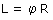
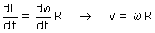
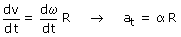

Magnitudes angulares y lineales
Un móvil que gira un ángulo φ también recorre una distancia L. La relación entre estas dos magnitudes es:
 |
 (Definición de radián) |
Derivando sucesivamente respecto al tiempo

